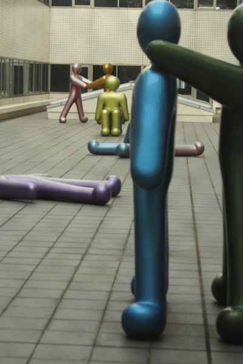

パーミンダー・コー

オフィスが入っている博多リバレインの９階。中庭のようなスペースにこの作品がある。アーティストとしてのコーは
イギリス出身であるが、インドにルーツを持ち、インドとイギリスを行き来し活動する。この作品は2体1組の群像を数
ペア配置。二人の人間が寄り添っている姿を表現しているようだ。作品それぞれの色はアジアからインスピレーションを
得て選んだそう。メタリック塗装をしていることで光に反射し奥行きのある表情と共に現代的な感覚を創り出している。